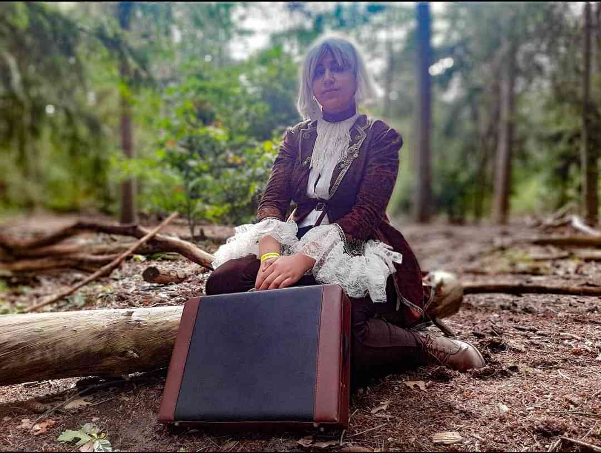
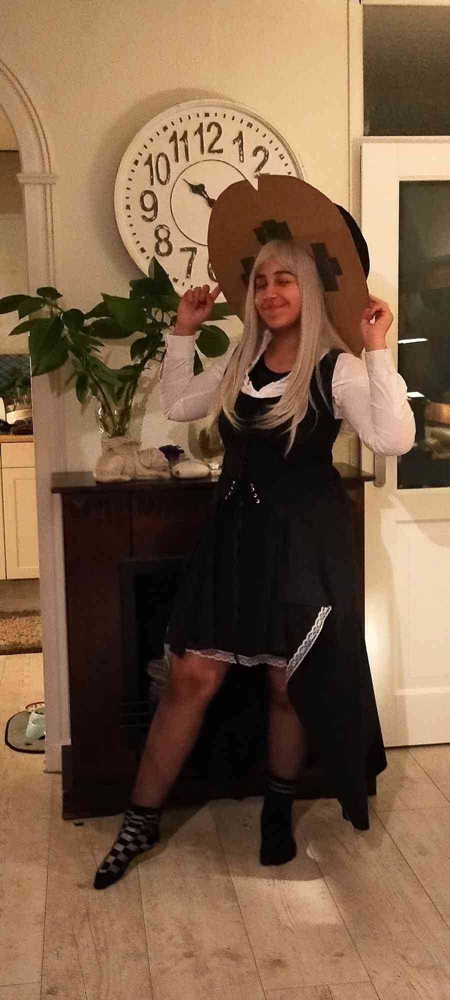

photos
here is where i will put all the photos i have made over the years plus abit of info of them all
first time cosplaying a cosplay of mine, photo done by pro
this con was amazing since i made many friends and went with a whole group this time i still have many things i bought and got from that con just like i still have the costume! at the time i wasnt that good with wigs so i had cutted almost all of it off and made it a small bob luckily it did still look good hehe
my cosplay of a plague doctor!
i made this cosplay by hand though it still long not finished, the dress has still a part that needs to be made just like the hat. luckely my mom helps me with it so that does help a lot !